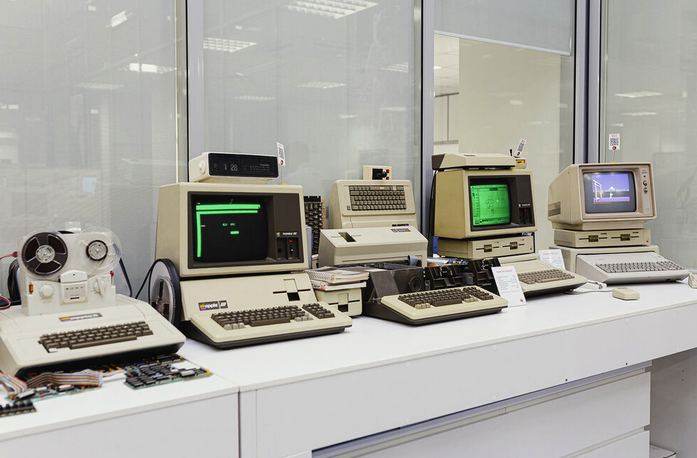
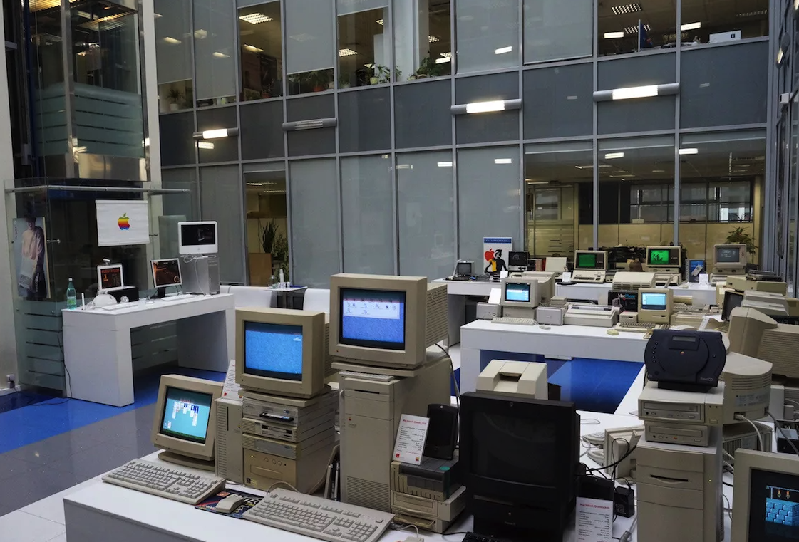
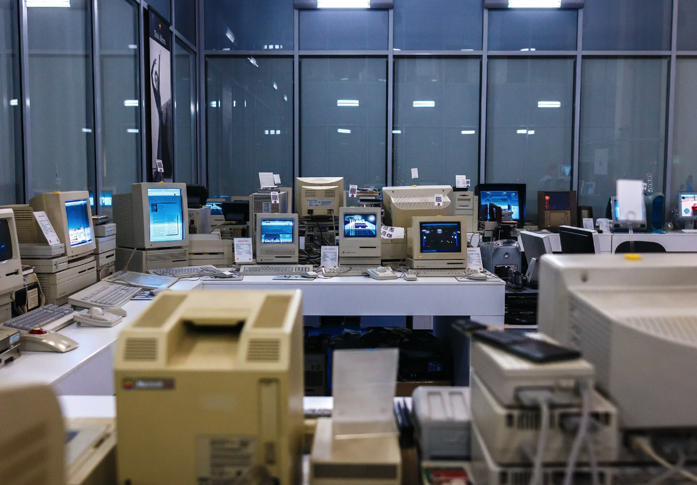

Apple II – 1977
Компьютер был впервые представлен в 1977 году на выставке West Coast Computer Fair и стал одним из первых и наиболее успешных персональных компьютеров того времени.

Apple III – 1980
Apple III — персональный компьютер компании Apple Computer, выпущенный в 1980 году. Задумывался как преемник Apple II, но провалился в продажах, из-за низкой надёжности выпуск Apple III был прекращен 24 апреля 1984 года, а III Plus был исключен из линейки продуктов Apple в сентябре 1985 года.

Macintosh PowerBook 140 – 1991
Его можно назвать самым первым ноутбуком Apple.
Имел разъём для чтения дискет, а также трекбол который находился перед клавиатурой, что задало тренд среди других производителей.
